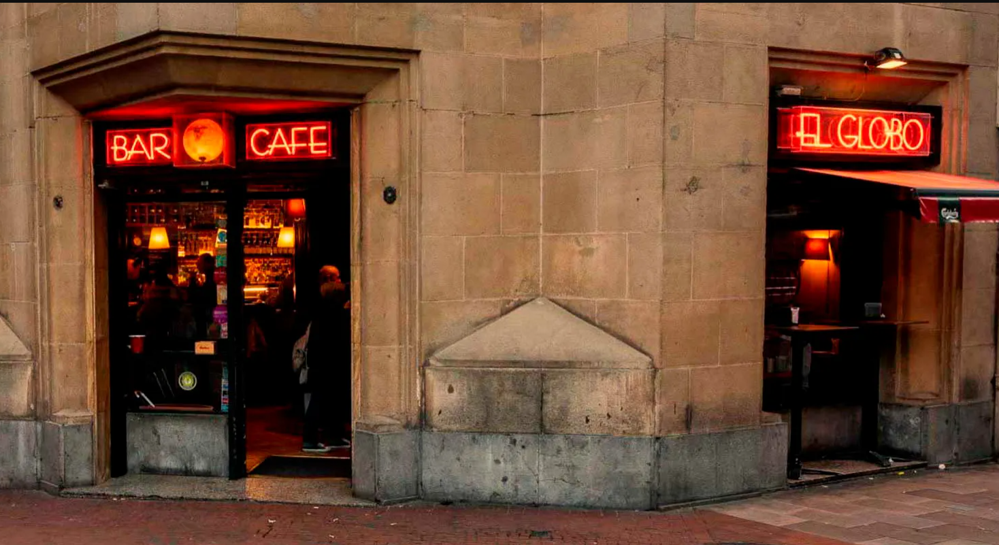

1. El Bar Globo
Si buscas un rincón con solera en el corazón de Bilbao, el Bar Glovo es una parada obligatoria para disfrutar de la esencia del "poteo" tradicional. Es el lugar ideal para degustar unos pintxos artesanales de primera calidad acompañados de un buen txakoli, siempre rodeado de un ambiente auténtico y cercano.
Ver detalles